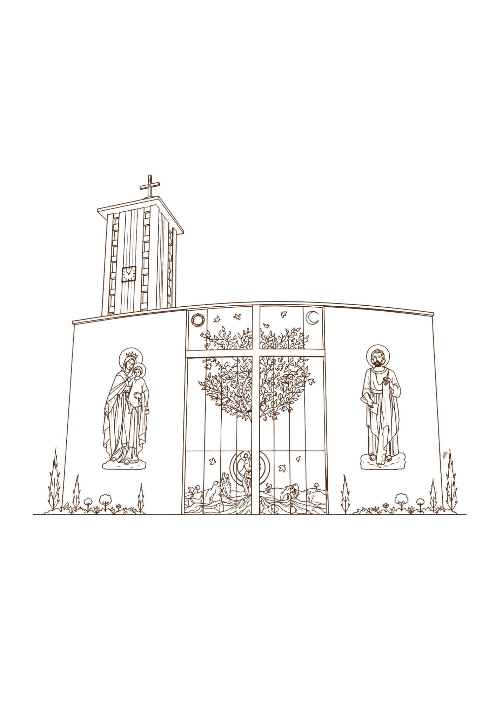
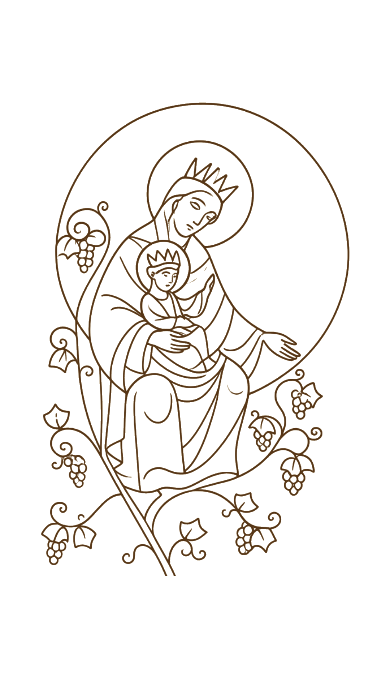
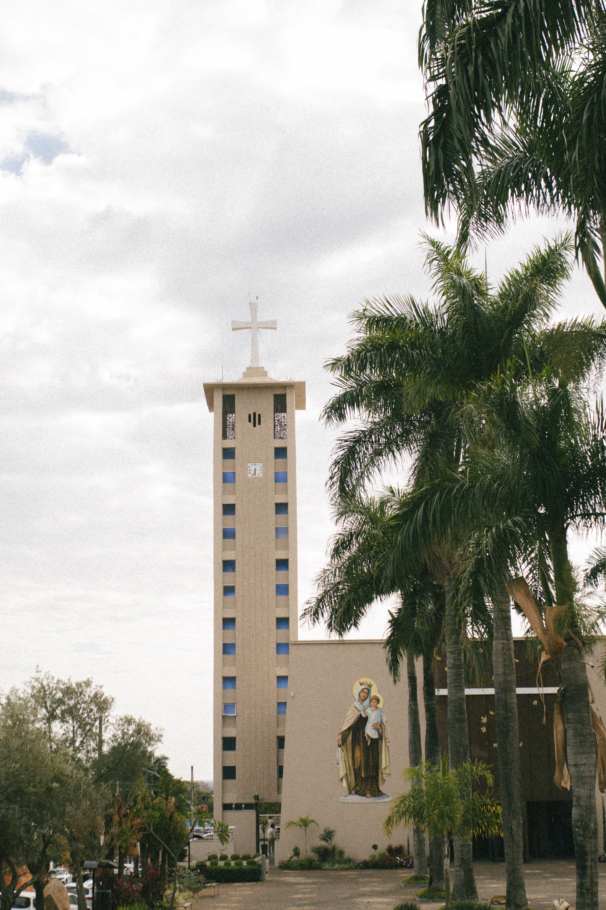

Maria,
Porta do Céu
A obra recorda Maria como Ianua Caeli, Porta do Céu: aquela por quem o Verbo entrou na história e que continua conduzindo seus filhos ao encontro de Cristo.


Faça sua doação para a nossa paróquia e leve para casa, como lembrança de agradecimento, um escapulário de resina italiana preparado com muito carinho.
Uma cota de colaboração é de R$ 1.500,00, podendo ser realizada em 10 contribuições de R$ 150,00.

0% da meta alcançada

Os sinos fazem parte da história da nossa comunidade. Eles anunciam as celebrações, acompanham os momentos importantes da vida da igreja e recordam diariamente a presença de Deus em nosso meio.
Com esta campanha, desejamos unir corações generosos para concluir a obra dos novos sinos da Paróquia Nossa Senhora do Carmo. Cada contribuição é um passo concreto para tornar essa obra realidade.
Como forma de agradecimento pela sua participação nesta campanha, a paróquia oferece um escapulário de resina italiana, preparado com carinho, como lembrança desta obra tão especial.
Mais do que um objeto, ele representa o seu gesto de amor à igreja e a sua contribuição para que os novos sinos façam parte da nossa história e da vida das próximas gerações.

Conheça a história e o significado espiritual da reprodução oficial do Santo Escapulário, inspirada na obra original que ornamenta a porta do Átrio da Igreja Matriz Nossa Senhora do Carmo de Monte Carmelo/MG.
A obra recorda Maria como Ianua Caeli, Porta do Céu: aquela por quem o Verbo entrou na história e que continua conduzindo seus filhos ao encontro de Cristo.
Concebida pela artista plástica Giovana Osmarini, a obra original foi modelada em argila extraída da própria terra de Monte Carmelo e posteriormente fundida em bronze.
O brasão dos Carmelitas Descalços reúne símbolos que apontam para Nossa Senhora, os profetas Elias e Eliseu, a Cruz de Cristo e a vocação contemplativa da família carmelitana.
“Levar esta efígie ao próprio lar significa conservar um memorial visível dessa herança espiritual multissecular.”Conhecer toda a história
Em poucos passos você faz parte desta história.
Cada cota de colaboração corresponde a R$ 1.500,00, podendo ser realizada em 10 contribuições de R$ 150,00.
Preencha o formulário com seu nome e a quantidade desejada e envie pelo WhatsApp do escritório paroquial.
Após o contato com a equipe paroquial, você poderá combinar a contribuição e a retirada do escapulário.
Preencha o formulário ao lado para entrar em contato com o escritório paroquial pelo WhatsApp. Nossa equipe dará continuidade ao atendimento e orientará você sobre a campanha.
Possibilidade de 10 contribuições de R$ 150,00.
Ao enviar, você será direcionado para o WhatsApp do escritório paroquial: (34) 3842-2540.